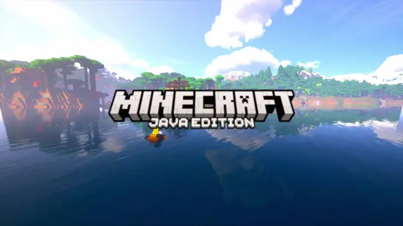

Downloadable Contents
Thumbnail
Video
Project directory: beautiful-minecraft.zip
License: N/A
Additional Information
N/A
Platforms
Bilibili
Title: [实验视频][片段] 大 美 MinecraftDescription
Note: 此资产在YouTube不可用
这是之前的废稿, 感觉做不完了就发出来了(灵感来源自: @云清Ciel )
刚刚开始学调色, 而且Replay Mod录制有屏幕撕裂, 可能看着有点别扭
(Kdenlive调色好麻烦啊... 后面得学学DaVinci的节点了...)
圣诞快乐!
部分取景自: SBT服务器, GRU服务器, SimMC服务器
剪辑软件: Kdenlive
录制模组/软件: Replay Mod, OBS Studio
使用的资源包: FPBR 1.1.0, Fresh Animations 1.10.1, Better Expressions 29.1, Human Era: Villagers & Illagers 3.8_villagers_only
使用的光影: iterationRP Alpha 0.7.23 Alpha 0.8.2 Alpha 0.8.5, iterationT 3.2.0
BGM: Samuel Kim Music - Call of Silence x Zero Eclipse
SBT服务器审核群: 982738400
GRU服务器社区交流群: 493335263
SimMC域名: play.simmc.cn
SimMC主群: 616695298
(夹带私货: @青阳Plus 的up交流群: 1062736861)
更多信息请见 https://morningmc.qzz.io/videos/beautiful-minecraft